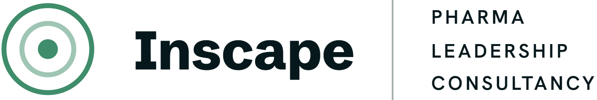

ProposalClarity of expectation, agreed priorities.
A proposal for Kerry Donnelly, UCB
Two teams have become one. The access strategy leads and the pricing leads now sit in a single team for the first time, with solid knowledge of both areas expected of everyone going forward. You know almost all of them already, which helps. It also means you already know where the gaps are.
Three things are happening at once. You are recruiting into vacancies, designing a leadership layer that may end up being largely new people, and raising expectations across a team where more than a third are currently contractors.
Underneath all of it sits something you have been hearing for twelve months. People are still not clear who is supposed to be doing what. In a highly matrixed organisation the old question of whose responsibility it is to do what work goes unanswered, and work gets picked up by whoever is least busy rather than by whoever should own it.
Part of that is cultural. Calling a spade a spade is hard in an organisation that hands people job titles which describe very little, and the gap gets filled with assumption.
The same pattern shows up one level higher. Priorities get discussed at length and agreed out loud far less often, which leaves people carrying different versions of what comes first.
Your ways of working framework has been rolling out since January and the core ask has survived the last six months of change. What it needs underneath it is clarity on who owns what, which is what lets a framework like that land fully.
The work starts by understanding the starting point. A confidential diagnostic asks the team two questions, who owns what and what comes first, and the spread in the answers is the finding. Where everyone agrees, there is nothing to fix. Where the same piece of work comes back with four different owners, the problem is located precisely, and nobody has to be accused of anything for it to be visible.
It builds on what you have already gathered rather than asking the team to start again. The change challenge map, your charter and what comes out of your one-to-ones all feed the baseline.
The team then works the material itself. Responsibility gets mapped in the room, by the people who hold it, which is what makes it stick. Anything that sits outside the team comes off the wall and into a separate brief for you to take forward.
You have sessions throughout, running off the same evidence, plus access between sessions when something needs a second opinion before you commit to it.
Delivery involves the Inscape team rather than one person. Ben leads the design and facilitation, with specialist input on strengths and on resilience where an option includes it.
A confidential diagnostic across the full team including contractors, with interviews with you, the leadership layer and a sample of the people your team hands work to. It maps where responsibility is contested, where priorities diverge, and where performance sits against the level you need. The output is a findings pack you can put in front of other people, turning what you already sense into evidence.
A face-to-face meeting where the team maps responsibility and signs it, works its priorities with the trade-offs made explicit, and commits to the behaviour you described. Wherever there is a question mark, the team takes it, owns it and gets it clear. The output is a signed map, an agreed order of priority, and a boundary brief covering what sits beyond the team.
What good looks like defined at each level, your charter pressure-tested against the map and given measures and a review date, then a follow-up diagnostic on identical questions. This is also how the work keeps learning as it goes, since the second set of answers shows what moved and what did not. The output is a measured shift you can take into your leadership team as evidence rather than opinion.
Each option contains the one below it. The choice is how far the work runs, rather than which problem it addresses.
By the middle of next year, a question mark in your team gets picked up rather than parked. Your leaders hold their people to a level everyone can name, and the conversations about who should be doing what happen once rather than every quarter.
The team is more in control of its own destiny, which is what you were reaching for with the change challenge map. People stop waiting for someone else to fix the unclear thing.
You walk into your leadership team with a before and after from your own team, which is a stronger position than conviction when the community-wide question comes up.
And the reshuffle lands on a team that knows what is expected of it, which makes the difficult conversations fair as well as necessary.
UCB's Glint data tells a story most leaders recognise. Your team is performing under sustained pressure. Resilience is a skill rather than a personality trait, and it is trainable.
Each team member receives a dedicated one-to-one session with our specialist coach and leaves with a personalised Wellbeing Action Plan they can use immediately. Focused, practical, and grounded in each person's specific pressures. For a team being asked to do more with more complexity, this is the infrastructure that makes sustained high performance possible.
Your team does exceptional work. Almost nobody outside your immediate stakeholders knows it.
Our Head of Story works with you to create a short, professionally produced internal video that communicates the impact and identity of your team. Human, compelling, and shareable. The package also includes professional headshots for every team member, replacing the inconsistent mix currently on LinkedIn and the internal organogram.
Every item below was delivered inside UCB and is available to discuss in detail. A written case study of the responsibility work is available on request.
| Responsibility & decision rights | Diagnostic and signed ownership map for a cross-functional leadership team, then repeated for a second asset. The finding was framed as a question of how the structure had been designed, using UCB's own operating model language as the standard. |
| Boundary work | Framing and clarifying an interface where two groups were both giving direction to countries, focused on where one should hand over to the other. |
| Dual reporting | A diagnostic where unclear mandate came out as the top barrier for three leaders independently, while each described their own priorities as clear. The evidence pointed at the structure rather than at communication. |
| Six-month team journey | Baseline diagnostic, mid-point check-in, charter review with measures, and a follow-up diagnostic on identical questions so the shift could be shown rather than claimed. |
| Leader & team transitions | Structured handover and first ninety days material for leaders taking on new teams, including profiling of the team they inherit and where its single points of failure sit. |
| What good looks like | Three-hundred-and-sixty degree feedback with strengths profiling integrated, used to make expectations specific enough for a leader to coach against. |